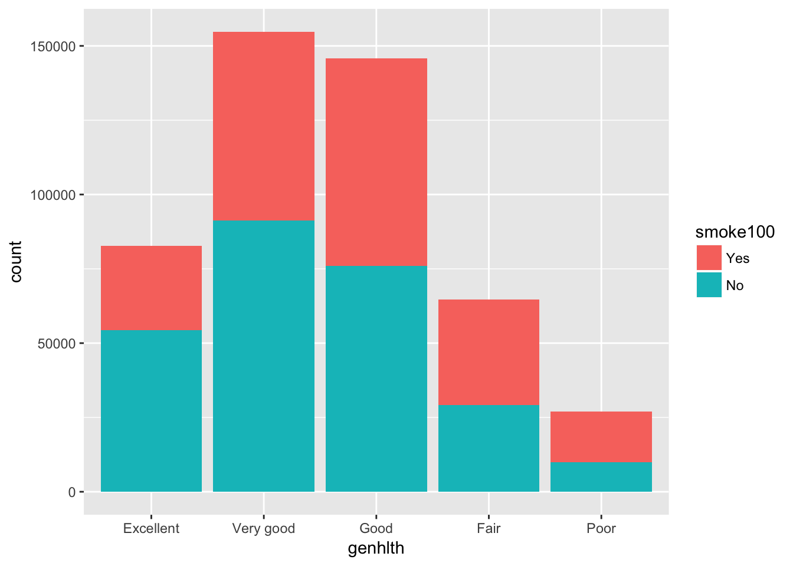

I think I want to see what cause difference among people’s health, and lifetime. The reason why some people live longer and better than others could be due to education, smoking, alcohol consumptions, or gender could be an effect to make difference .
research question 1:
ggplot(Q1, aes(genhlth, fill = smoke100))+geom_bar(position = "stack") Clearly in the Excellent and Very Good health, people who don’t smoke have greater proporotion. Whihc means smoking reduce the health. Let’s see the Chi square to test the relationship between the two varibles.
chisq.test(genhlth,smoke100)##
## Pearson's Chi-squared test
##
## data: genhlth and smoke100
## X-squared = 11423, df = 4, p-value < 2.2e-16p-value is small, which indicates that smoking is siginificant related to the general health.